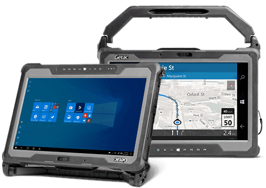

Get In Touch
Uncompromised Mobility
The A140 fully rugged tablet provides a host of convenient carrying and mounting options to adapt to the way you work. The optional multi-function hard handle acts as a kickstand while working and a sturdy way to grab the tablet and go. An available slim-profile vehicle dock maximizes cab space and supports tri-pass through ports for connection to high-gain GPS, WWAN and WLAN roof mounted antennas.

Configurable & Purpose Built
The A140 is designed to be a purpose-built tool with a host of configurable options to fit your workflow. We know that no two jobs are the same, which is why we built a completely optional machine to give you options like barcode reader, dedicated GPS, LAN, serial ports and more.